第3分団
| 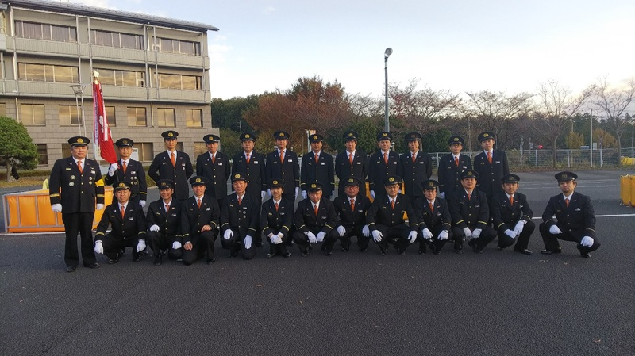 我々第3分団は、小川分団長のもと、総勢29名で活動しています。 第3分団では、担当地域により2部に分かれており、さらに自治会毎に5班に分かれた体制となっています。第3分団の担当する地域は主に市街地の西側一帯で、通称本郷・大河原・通称河原町、通称宮元町・通称三丁目・茜台二丁目・茜台三丁目を担当しています。現在の町名では「飯能」「大河原」「山手町」「久下」「茜台の一部」「仲町の一部」「稲荷町の一部」「本町の一部」「八幡町の一部」が該当します。現在、可搬ポンプ(車両から下ろして運べるポンプ)とそれを積む積載車が各部に一台ずつ配属されています。活動としては管轄地域の安全、火防のパトロールを定期的に行っており、管轄地域で火災や災害があれば出動して消火活動などを行います。また、隣接分団(1分団、2分団、4分団、6分団、7分団)で火災等が発生した場合もその規模によっては出動する事もあります。その他、普段から規律、体力、知識を訓練で養い有事に備えたり、地域では防災訓練などの行事に協力、参加して貢献しています。
|
令和2年度トピックス
◆2020/11/22（日）清掃及び機械器具点検新型コロナウイルス感染症の影響により令和2年度の消防特別点検は中止となりました。第三分団全員で詰所の大掃除と機械器具点検です。最後に皆んなで記念撮影。
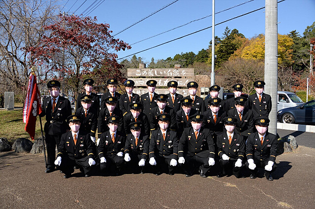
◆2020年10月25日（日）全団員訓練
雲１つない快晴。訓練日和。
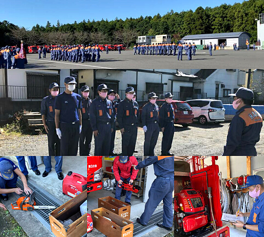
◆2020年9月13日（日）3分団中継送水訓練
岩根橋から入間川に向け放水!? 川を水利にホースを数10本連結して数百メートル先まで水を送る訓練です。ホースの途中にポンプを経由することで水圧を調整。こうする事で適切な水圧で水を遠くまで送ることができるようになります。
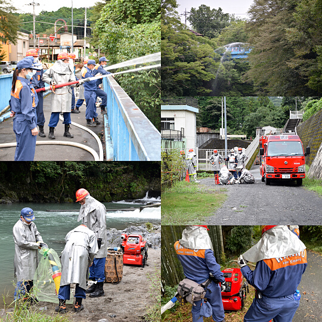
◆2020年8月16日（日）3分団訓練
9月に行う中継送水訓練の下見に来ました。自然水利（入間川）から水を取り300m以上先にある橋から川に向けて放水予定です。飲み物も用意し熱中症対策もバッチリ！ホースが何本必要かな？中継ポンプはどこに置こうか？人員はどこの配置しなければならないか？団員たちの中から様々な意見が飛び交います。
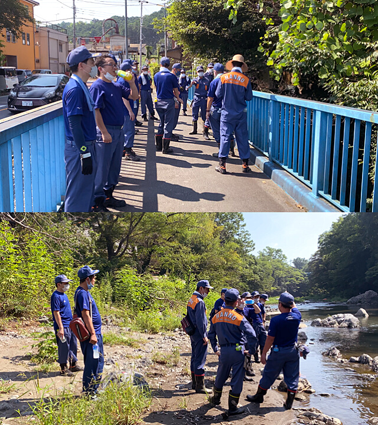
◆2020年6月21日（日）3分団訓練
新型コロナの影響もあり、令和2年度になって初めての3分団全体での水出し訓練です。3月から2部に配備された新車両に新入団員も2名加わり、新しい戦力と共にポンプ操作と筒先を持ち防火水槽から防火水槽に向けて放水はじめ！水しぶきが気持ちいい♪そして訓練で流す汗も。
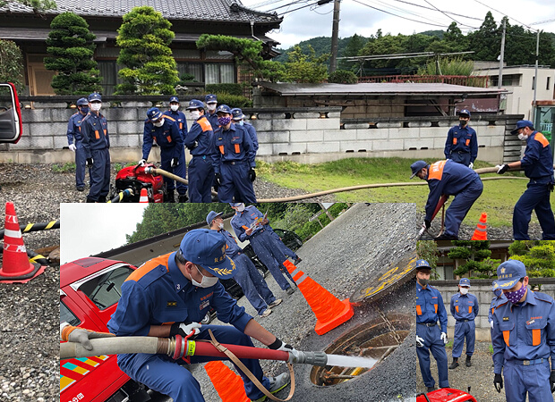
令和元年度トピックス
◆2020年1月11日(土) 出初式令和最初のお正月を終え第二週目の土曜日に、市役所の駐車場にて飯能消防団出初式を執り行いました。今年は飯能第一中学校吹奏楽部の皆さんに行進曲を演奏して頂きました。とても迫力のあり躍動感のある生演奏をバックに、団員一同も晴れ晴れとした気持ちでかつ気の引き締まる思いでした。式の中盤で吹奏楽部の皆さんに、西城秀樹の「ヤングマン」などを振付まじりで生演奏して頂き、団員一同だけでなく市民の皆様も大勢聴き入っておりました。今年は夏に東京オリンピックが開催されます。年が終わる頃『今年はオリンピックがとても盛り上がったなぁ』で終始するような、大規模な自然災害のない平和な一年が送れることを切に願います。
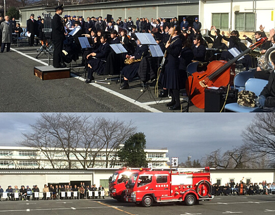
◆2019年9月1日(日)
令和になり最初の五地区合同防災避難訓練（三丁目・宮本町・河原町・本郷・大河原）が私たち第三分団主導により行われました。AEDの操作訓練、心肺蘇生訓練、消火器を使用の初期消火訓練、消防車の展示・試乗・説明を団員を手元とし地域の方々に訓練・体験して頂きました。そのあと私たち消防団による小型ポンプの放水訓練を行い地域の皆様に披露させて頂きました。団員皆、今後いつあるかもしれない災害や事故に遭遇したときにすぐに対応して頂くよう一生懸命訓練のお手伝いをさせて頂きました。
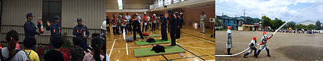
◆2019年8月24日(土)
市内の飲食店にて13代梨木前団長の退団記念パーティーが行なわれました。OBの方々をはじめ多くの関係者の方々と共に梨木前団長を囲い楽しい時間を過ごしました。前団長がかがげる『笑顔を守る消防団』のキャッチフレーズを胸に、これからも地域を守って行きたいという団員達の士気・団結が一層向上しました。前団長の30年に渡る消防活動、それに今年度受賞されました最高に名誉ある特別表彰「まとい」をはじめとする数多くの偉業。本当にお疲れさまでした。そして大変お世話になりました。
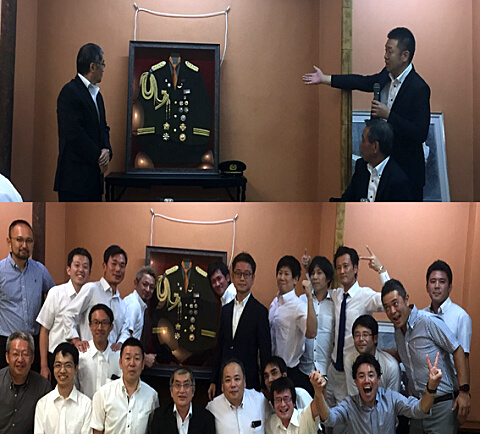
◆2019年7月7日（日）中継送水訓練
この日は東吾野地区の林道にて、1・3・9分団合同にて中継送水訓練を行いました。3分団の1部は水源から2番目の中継ポンプ、2部は5番目の中継ポンプを担当しました。実際に林野火災になってしまった場合、他分団と連携し支障なく吸水・送水・放水をすることによって災害を最小限に抑えることが出来ることを痛感しました。昨年末から春にかけて林野火災などによる出動も多く、いつ何時どんな形であれ実際に起こっている災害現場に適切に対応した行動が出来るようみんな張り切っています。
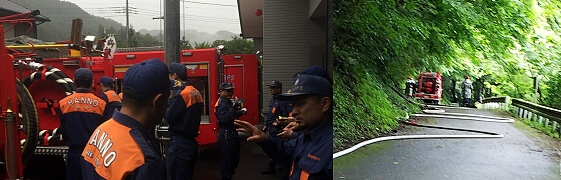
◆2019年5月19日（日）
全団員訓練終了後、3分団2部詰所駐車場において機械器具の操作訓練をしました。ポンプ操作による水出し、チェーンソー、エンジンカッターなどの使い方を訓練しました。昨年末から、火災による出動が増えており、1週間前には3分団だけで中継送水の訓練をセンターで行った数日後に、美杉台の山火事で実際に現場にて中継送水を行いました。いつ起こるかわからない火災や災害に備えて、消防団員として実際の現場で何ができるか？もしくはやるべきことは何か？を常に考え様々な訓練でスキルを身に着けていけるよう分団全員で頑張っています。
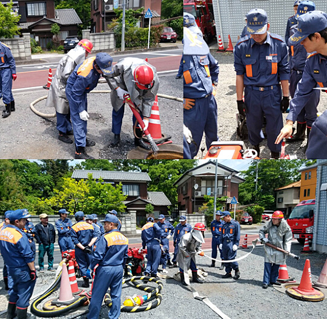
◆2019年4月19日（金） 入団式
今年度入団式が行われました。今年も多くの新入団員が入団してくれました。私たちの3分団にも3名の新しい仲間が入団してくれました。今年から吉田分団長となり、新たな3分団のスタートです。楽しく時には厳しく3分団らしさで頑張っていきましょう。
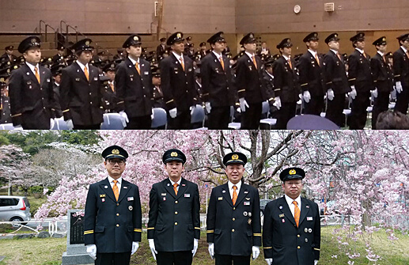